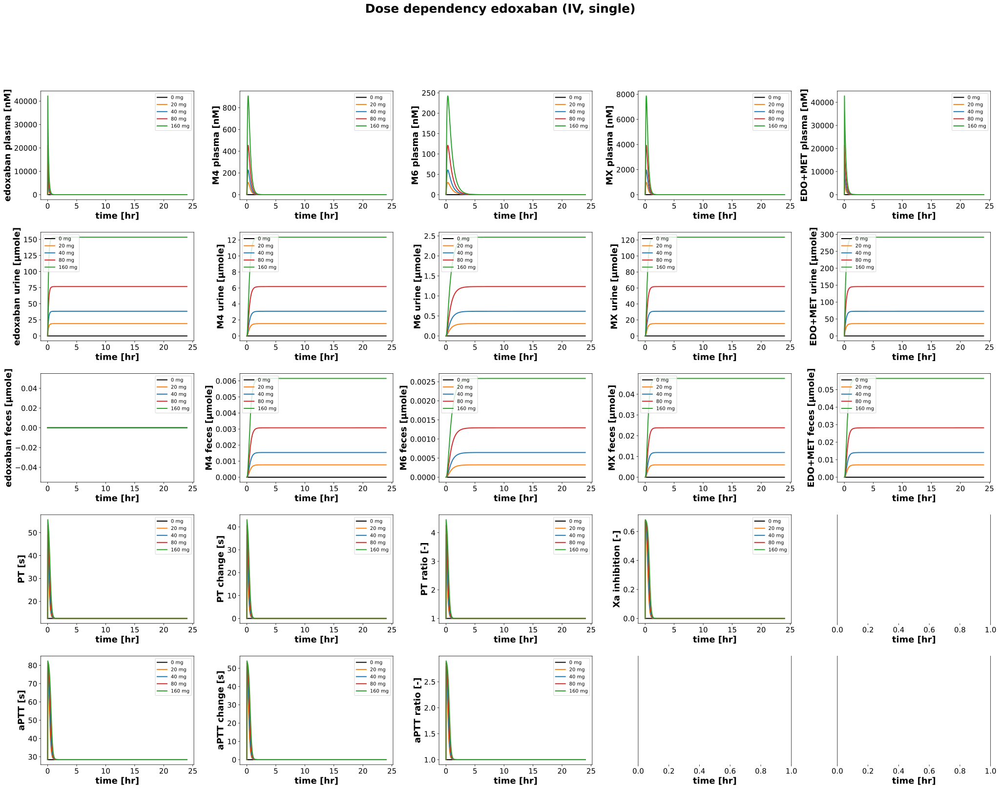
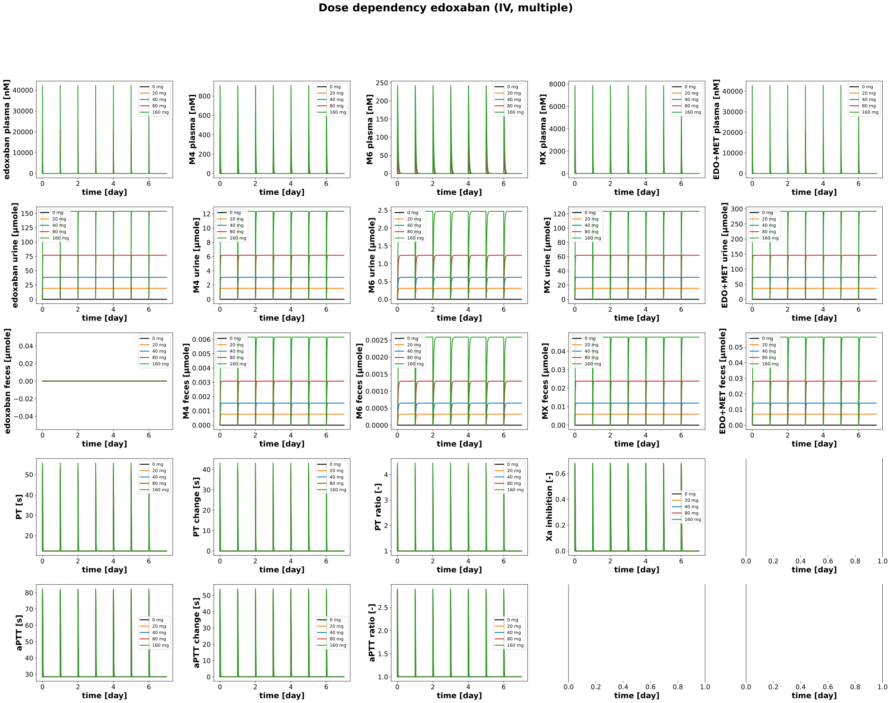
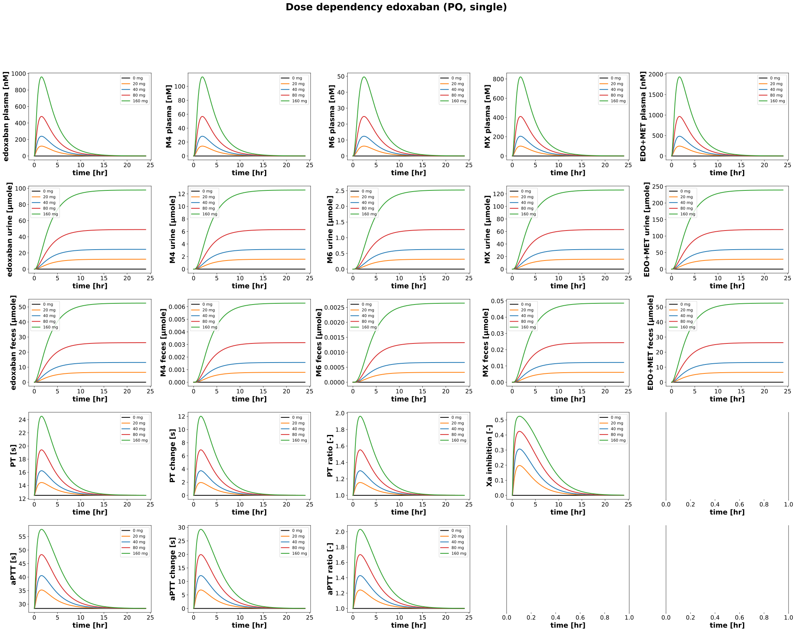
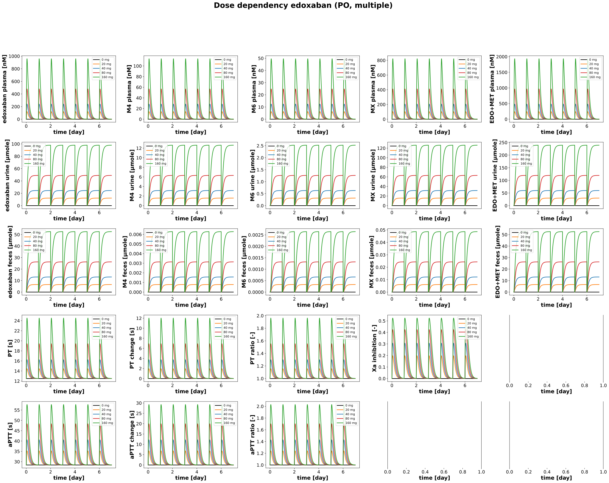

|  |
|  |
|  |
|  |
../../../../src/pkdb_models/models/edoxaban/experiments/misc/dose_dependency.py
from copy import deepcopy
from typing import Dict
from sbmlsim.plot import Axis, Figure, Plot
from sbmlsim.simulation import Timecourse, TimecourseSim
from pkdb_models.models.edoxaban.experiments.base_experiment import (
EdoxabanSimulationExperiment,
)
from pkdb_models.models.edoxaban.helpers import run_experiments
class DoseDependencyExperiment(EdoxabanSimulationExperiment):
"""Tests application."""
doses = [0, 20, 40, 80, 160] # [mg]
colors = ["black", "tab:orange", "tab:blue", "tab:red", "tab:green"]
routes = ["IV", "PO"]
dosing = ["single", "multiple"]
def simulations(self) -> Dict[str, TimecourseSim]:
Q_ = self.Q_
tcsims = {}
for route in self.routes:
for dose in self.doses:
for dosing in self.dosing:
# single dosing
if dosing == "single":
tcsims[f"edo_{route}_{dose}_{dosing}"] = TimecourseSim(
Timecourse(
start=0,
end=24 * 60, # [min]
steps=1000,
changes={
**self.default_changes(),
f"{route}DOSE_edo": Q_(dose, "mg"),
},
)
)
elif dosing == "multiple":
tc0 = Timecourse(
start=0,
end=24 * 60, # [min]
steps=1000,
changes={
**self.default_changes(),
f"{route}DOSE_edo": Q_(dose, "mg"),
},
)
tc1 = Timecourse(
start=0,
end=24 * 60, # [min]
steps=1000,
changes={
f"{route}DOSE_edo": Q_(dose, "mg"),
# reset urinary amounts
"Aurine_edo": Q_(0, "mmole"),
"Aurine_m4": Q_(0, "mmole"),
"Aurine_m6": Q_(0, "mmole"),
"Aurine_mx": Q_(0, "mmole"),
# reset feces amounts
"Afeces_edo": Q_(0, "mmole"),
"Afeces_m4": Q_(0, "mmole"),
"Afeces_m6": Q_(0, "mmole"),
"Afeces_mx": Q_(0, "mmole"),
},
)
tcsims[f"edo_{route}_{dose}_{dosing}"] = TimecourseSim(
[tc0] + [tc1 for _ in range(6)]
)
return tcsims
def figures(self) -> Dict[str, Figure]:
return {
**self.figure_pk(),
}
def figure_pk(self) -> Dict[str, Figure]:
figures = {}
for route in self.routes:
for dosing in self.dosing:
num_cols = 5
fig = Figure(
experiment=self,
sid=f"Fig_dose_dependency_pk_{route}_{dosing}",
num_rows=5,
num_cols=num_cols,
name=f"Dose dependency edoxaban ({route}, {dosing})",
)
plots = fig.create_plots(
xaxis=Axis("time", unit="hr" if dosing == "single" else "day"),
legend=True
)
infos = [
# plasma
("[Cve_edo]", 0),
("[Cve_m4]", 1),
("[Cve_m6]", 2),
("[Cve_mx]", 3),
("[Cve_edo_total]", 4),
# urine
("Aurine_edo", num_cols + 0),
("Aurine_m4", num_cols + 1),
("Aurine_m6", num_cols + 2),
("Aurine_mx", num_cols + 3),
("Aurine_edo_total", num_cols + 4),
# feces
("Afeces_edo", 2 * num_cols + 0),
("Afeces_m4", 2 * num_cols + 1),
("Afeces_m6", 2 * num_cols + 2),
("Afeces_mx", 2 * num_cols + 3),
("Afeces_edo_total", 2 * num_cols + 4),
("PT", 3 * num_cols + 0),
("PT_change", 3 * num_cols + 1),
("PT_ratio", 3 * num_cols + 2),
("Xa_inhibition", 3 * num_cols + 3),
("aPTT", 4 * num_cols + 0),
("aPTT_change", 4 * num_cols + 1),
("aPTT_ratio", 4 * num_cols + 2),
]
for sid, ksid in infos:
if sid:
plots[ksid].set_yaxis(label=self.labels[sid], unit=self.units[sid])
for sid, ksid in infos:
if sid:
for kval, dose in enumerate(self.doses):
plots[ksid].add_data(
task=f"task_edo_{route}_{dose}_{dosing}",
xid="time",
yid=sid,
label=f"{dose} mg",
color=self.colors[kval],
)
figures[fig.sid] = fig
return figures
if __name__ == "__main__":
run_experiments(DoseDependencyExperiment, output_dir=DoseDependencyExperiment.__name__)
{kind=link}
{kind=link}
{kind=link}
{kind=link}